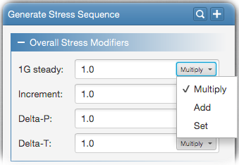

Overall stress modifiers multiply, add or set all 1g steady, incremental, delta-p and delta-t stresses in the spectrum. Modification
type is selected as shown in the following figure.

Modification types are as
follows;
Multiply: Stresses will be scaled by the given stress factor.
Add: Given constant value will be added to the existing stresses.
Set: Existing stresses will be replaced by the given value.
Loadcase factors allow you to modify the stresses for the selected 1g or incremental fatigue events. Search for the
event you want to modify via its name or comment, select it (or multiple events), enter modification value, select modification method and add it
to the modifiers list.
In addition, you can also supply multiplication table files in order to apply loadcase factors. For this, click on the
Multiplication Table tab and simply drag & drop multiplication table file (*.mut) on the designated area. Select the table column (factors column
index starts with 1), and click Ok.
You can modify the stresses based on the flight segment they belong to. For this, first select the flight segments you want to modify,
enter 1g, increment, delta-p and delta-t stress modifier values, select the modification method for each and add the modifier to the modifiers list.
You can specify the delta-p load case number and the reference delta pressure value to be used when generating the delta-p stresses. Leave these
fields empty for automatic determination. By default the delta-p load case number will be determined from the load case having a flight type
identifier ending with '000' in the CVT file. Reference delta-p value will be searched from the conversion table, and if not found,
the maximum delta pressure value from the ANA file will be used as the reference DP.
Equinox is able to generate delta-t stresses with the given delta-t interpolation method. Following options are available;
None: No delta-t stress will be generated.
1 point interpolation: Delta-t stresses will be generated from single stress/temperature ratio. For this, the delta-t load
case number and reference temperature value should be supplied.
2 points interpolation: In this case, delta-t stresses will be interpolated from the superior and inferior stress/temperature
values. For this, the superior and inferior delta-t load case numbers and reference temperature values should be supplied.
Following inputs are required in order to define stress rotation;
Stress component: Stress component to use from the pilot point stresses file (STF). This can be normal x, y, shear xy or
rotated stresses with the given rotation angle in degrees.
Rotation angle: This is the angle in degrees in order to rotate the stress tensor.